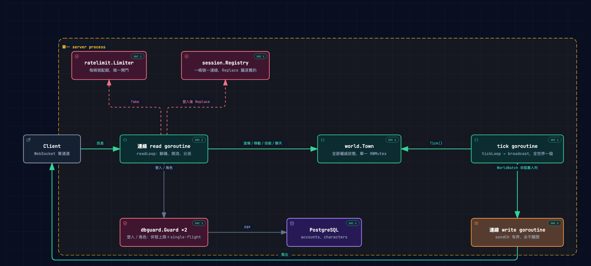
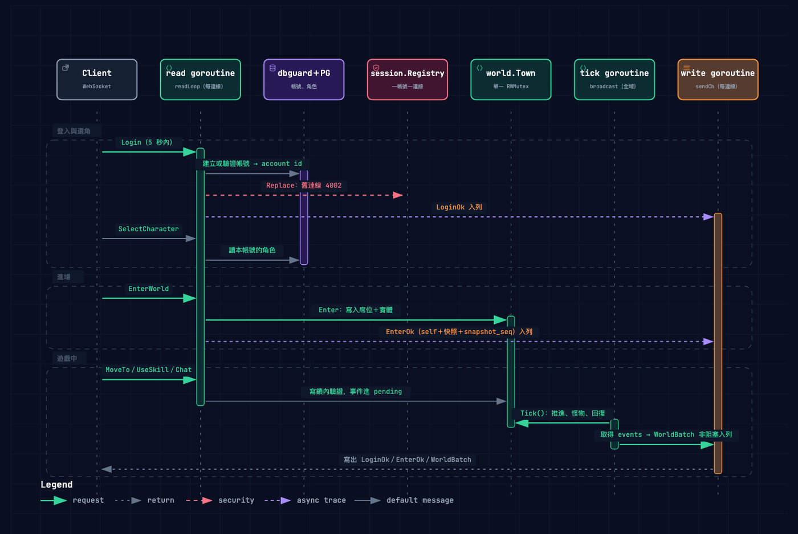
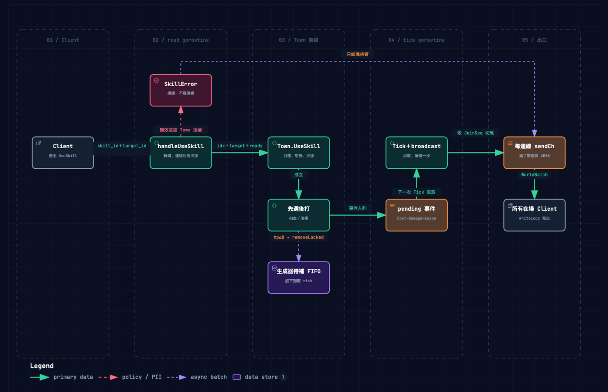
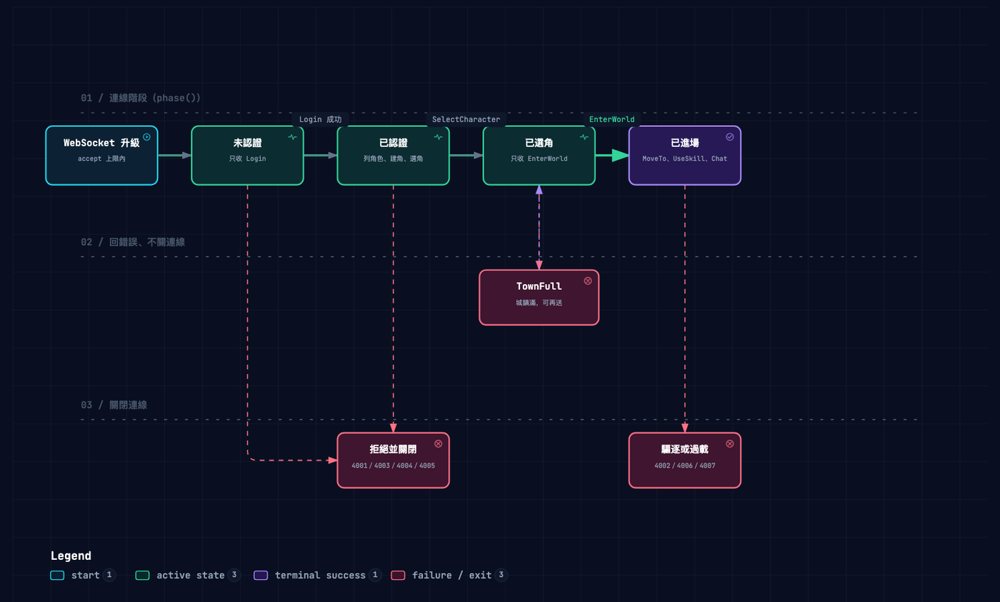
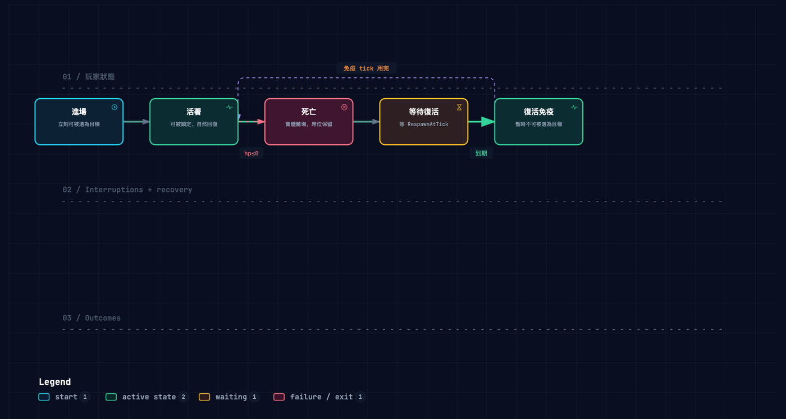
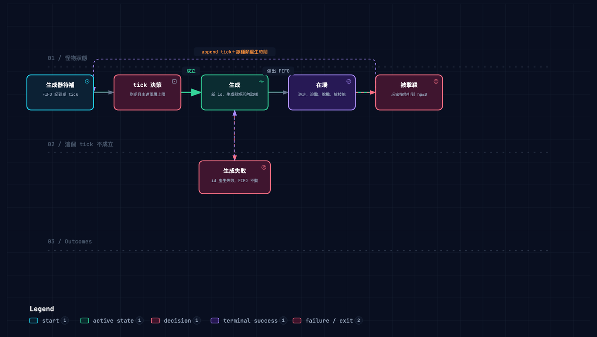

一個 MMO 的前後端練習：Go 伺服器與 Unity 客戶端分成兩個 repo，以對外協定文件銜接。 兩邊都和 AI 協作，但依自己對領域的熟悉程度，用不同嚴謹度的流程—— 不熟的後端拆成七個階段、每一步都留下可審查的文件；熟悉的客戶端則在 plan mode 反覆確認架構後才實作。 我負責設計流程、拍板範圍與取捨，並審查產出。
Unity 客戶端連上 Go 伺服器的實機錄影：進場、移動、怪物與戰鬥、死亡復活， 以及手機的虛擬搖桿與自動戰鬥。
以 Go 撰寫，玩家透過單一條 WebSocket 連線登入、進入城鎮並即時戰鬥；
server 以固定 tick 推進世界並廣播給所有連線。兩週內以 22 個 vertical slice 逐刀累積，
每一刀都通過 go test -race 才收尾。






圖怎麼來的：由 AI 逐項對照程式碼產生 archify 圖檔，節點釘到產圖當時的原始碼行號； 只在架構有結構性變動的那一刀才更新，避免圖與程式脫節。
Unity 6（URP 2D），自建網路層與 UI 框架，依伺服器的對外協定逐刀串接到連鎖技能； 同時支援桌面滑鼠與手機觸控兩種操作。
同一個專案的兩端，刻意用了兩種和 AI 協作的方式。判斷依據是：我能不能自己一眼看出 AI 的產出哪裡不對。
每個功能切成一個可以獨立驗收的 vertical slice，依序交給專責的 agent。 agent 每次啟動都是全新的 context，看不到對話歷史，所以階段之間只靠寫進磁碟的文件交接。
go test -race 三道全過才算完成，不接受「本機跑不出來」[spec]、[implement] 等前綴，一眼看出每個 commit 是哪一刀的哪一步兩個 repo 各自由不同的 AI session 開發，彼此看不到對方的對話，所以銜接完全靠文件。
protocol.md：訊息型別、欄位、close code 與 client 必須實作的規則伺服器的流程規範寫在 CLAUDE.md 與各 agent 定義裡，不是一次寫好的。每條規則都對應一次實際發生的問題， 並把「為什麼」一起留下，避免之後被看似等價的寫法繞過。
test-writer 做變異驗證時用 git 還原檔案，把 implementer 尚未 commit 的整份實作洗回上一版。
agent 多次把「怪物比玩家快」「區域擺太近」當成缺陷來擋、來提問，但數值應該由企劃調整。
architect 連續兩輪把測試規格寫進架構文件，但 test-writer 的必讀清單裡沒有那份檔案。
測試直接比對預設設定裡的技能與怪物數值，企劃每調一次數字，就有一批無關的測試變紅。
嚴謹流程的代價是成本：隨著功能累積，每一刀的 token 消耗明顯上升。先寫腳本從 session 紀錄統計各階段用量，找出消耗集中在哪裡，再決定怎麼改。
-race 留到階段收尾